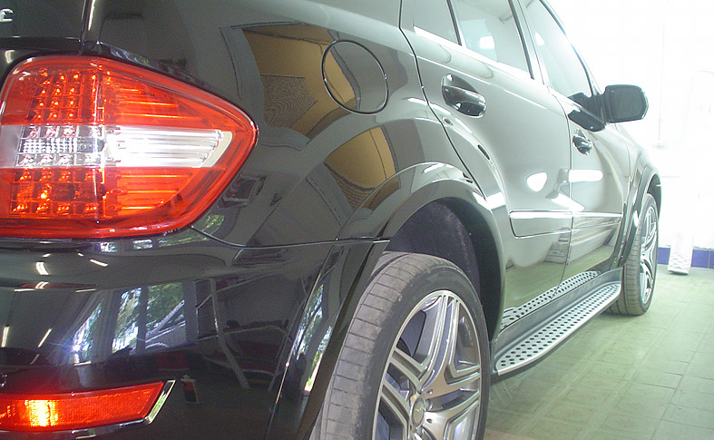
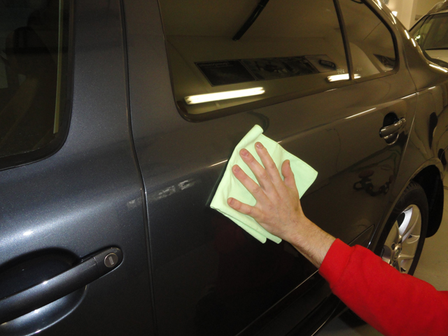
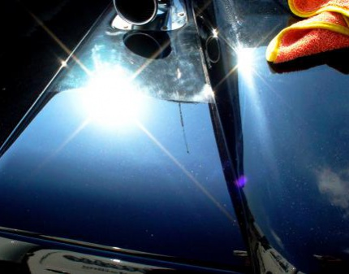

Такая процедура, как защитная полировка кузова автомобиля, помогает значительно увеличить срок службы лакокрасочного покрытия.
Лакокрасочное покрытие в значительной мере подвержено воздействию негативных факторов окружающей среды: влаги, УФ-излучения и других. Нарушение его целостности ведет к образованию трещин, потертостей, исчезновению глянца, что отрицательно сказывается на внешнем виде машины.
Чтобы машина на протяжении длительного времени радовала вас своей красотой, необходимо периодически осуществлять защитную полировку. Эта процедура имеет ряд особенностей, известных только профессионалам.
Главной особенностью защитной полировки автомобиля является использование полиролей для кузова на основе эпоксидных смол, в составе которых не содержатся абразивные вещества. В результате лакокрасочное покрытие надежно защищено от:
атмосферных осадков,
механических повреждений,
окисления,
химических реагентов,
солнечного излучения и так далее.
Наномойка Антидождь Инновационный автошампунь Полировка «Жидкое стекло»